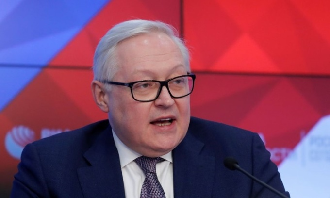

Nga cho biết không lạc quan về cuộc đàm phán sắp diễn ra với Mỹ, đồng thời khẳng định sẽ không nhượng bộ trước áp lực từ Washington. Các cuộc hội đàm theo kế hoạch sẽ diễn ra trong tuần này tại Geneva, Brussels và Vienna nhưng hãng thông tấn nhà nước Nga RIA hôm nay dẫn lời Thứ trưởng Ngoại giao Sergei Ryabkov cho biết đàm phán hoàn toàn có thể kết thúc chỉ sau một cuộc họp. "Tôi không thể loại trừ bất cứ điều gì, đây là một kịch bản hoàn toàn có thể xảy ra và người Mỹ không nên quá ảo tưởng", ông nói. "Đương nhiên, chúng tôi sẽ không nhượng bộ trước áp lực và những lời đe dọa liên tục từ những người ở phương Tây sẽ tham gia các cuộc hội đàm sắp tới".
Ảnh: Thứ trưởng Ngoại giao Nga Sergei Ryabkov phát biểu tại một cuộc họp báo ở Moskva hồi tháng 2/2019.Hãng thông tấn Interfax dẫn lời Thứ trưởng Ryabkov, người sẽ dẫn đầu phái đoàn Nga tại Geneva, nói thêm rằng Moskva không lạc quan trước khi bước vào đàm phán. Bình luận của ông cho thấy một lập trường không khoan nhượng từ Moskva ở vào thời điểm căng thẳng nhất trong quan hệ Nga - Mỹ kể từ Chiến tranh Lạnh. Căng thẳng giữa Nga và phương Tây gần đây leo thang sau khi Mỹ, NATO cáo buộc Nga điều khoảng 70.000-100.000 quân tới sát biên giới với Ukraine, bày tỏ lo ngại nước này có thể phát động một cuộc chiến tổng lực. Nga bác bỏ cáo buộc và tuyên bố chúng "vô căn cứ", khẳng định mọi động thái quân sự ở biên giới phía tây hoàn toàn vì mục đích phòng thủ. Đại diện Nga và Mỹ dự kiến gặp nhau tại Geneva, Thụy Sĩ, ngày 10/1. Sau cuộc gặp với Mỹ, phía Nga sẽ gặp gỡ tất cả 30 thành viên NATO ngày 12/1. Đây là lần đầu tiên cuộc gặp như vậy được tổ chức kể từ tháng 7/2019.